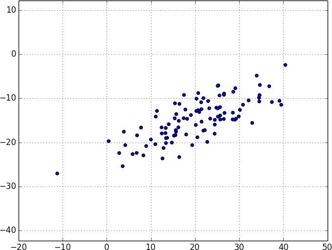
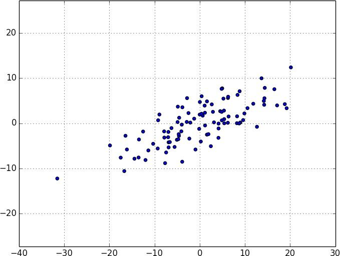
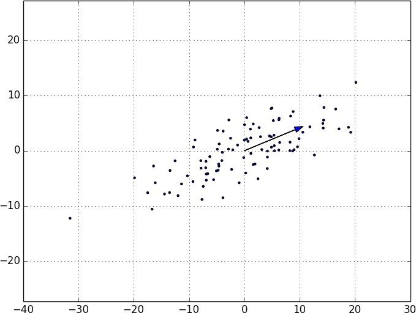
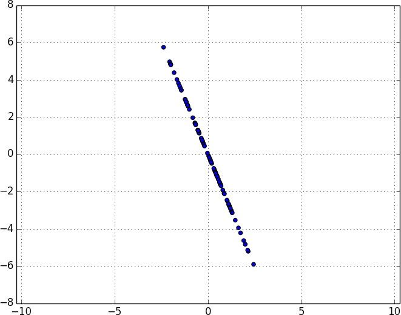
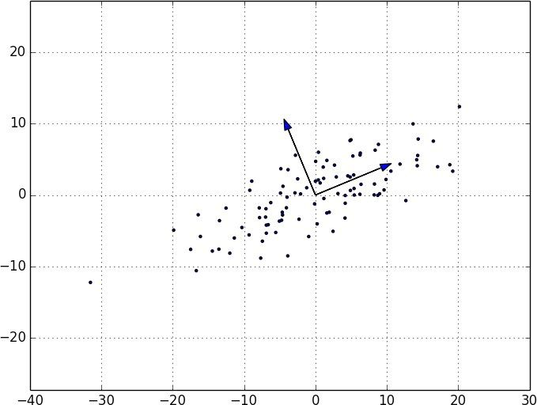

实际上，这样的技术不适用于低维数据集。降维多用于数据集的维数很高的情形，你可以通过一个小子集来抓住数据集本身的大部分变差。不过，这种情况很复杂，绝非一两章能讲得清。
实际上，这样的技术不适用于低维数据集。降维多用于数据集的维数很高的情形，你可以通过一个小子集来抓住数据集本身的大部分变差。不过，这种情况很复杂，绝非一两章能讲得清。10.5 降维
有时候，数据的“真实”（或有用的）维度与我们掌握的数据维度并不相符。比如，考虑图 10-5 中所示的数据。

图 10-5：坐标轴“错误”的数据
数据的大部分变差看起来像是沿着单个维度分布的，既不与 x 轴对应，也不与 y 轴对应。
当这种情形发生时，我们可以使用一种叫作主成分分析 （principal component analysis，PCA）的技术从数据中提取出一个或多个维度，以捕获数据中尽可能多的变差。
首先，我们需要将数据转换成为每个维度均值为零的形式：
def de_mean_matrix(A):
"""returns the result of subtracting from every value in A the mean
value of its column. the resulting matrix has mean 0 in every column"""
nr, nc = shape(A)
column_means, _ = scale(A)
return make_matrix(nr, nc, lambda i, j: A[i][j] - column_means[j])
（如果不这样做，应用这种技术的结果可能就只是确定数据的均值本身，而非找出数据中的变差。）
图 10-6 展示了去均值后的示例数据。

图 10-6：去均值后的数据
现在，已有一个去均值的矩阵 X ，我们想问，最能抓住数据最大变差的方向是什么？
具体来说，给定一个方向 d （一个绝对值为 1 的向量），矩阵的每行 x 在方向 d 的扩展是点积 dot(x, d) 。并且如果将每个非零向量 w 的绝对值大小调整为 1，则它们每个都决定了一个方向：
def direction(w):
mag = magnitude(w)
return [w_i / mag for w_i in w]
因此，已知一个非零向量 w ，我们可以计算 w 方向上的方差：
def directional_variance_i(x_i, w):
"""the variance of the row x_i in the direction determined by w"""
return dot(x_i, direction(w)) ** 2
def directional_variance(X, w):
"""the variance of the data in the direction determined w"""
return sum(directional_variance_i(x_i, w)
for x_i in X)
我们可以找出使方差最大的那个方向。只要得到梯度函数，我们就可以通过梯度下降法计算出来：
def directional_variance_gradient_i(x_i, w):
"""the contribution of row x_i to the gradient of
the direction-w variance"""
projection_length = dot(x_i, direction(w))
return [2 * projection_length * x_ij for x_ij in x_i]
def directional_variance_gradient(X, w):
return vector_sum(directional_variance_gradient_i(x_i,w)
for x_i in X)
第一主成分仅是使函数 directional_variance 最大化的方向：
def first_principal_component(X):
guess = [1 for _ in X[0]]
unscaled_maximizer = maximize_batch(
partial(directional_variance, X), # 现在是w的一个函数
partial(directional_variance_gradient, X), # 现在是w的一个函数
guess)
return direction(unscaled_maximizer)
也许，你也有可能使用随机梯度下降方法：
# 这里没有"y"，所以我们仅仅是传递一个Nones的向量
# 和忽略这个输入的函数
def first_principal_component_sgd(X):
guess = [1 for _ in X[0]]
unscaled_maximizer = maximize_stochastic(
lambda x, _, w: directional_variance_i(x, w),
lambda x, _, w: directional_variance_gradient_i(x, w),
X,
[None for _ in X], # 假的 "y"
guess)
return direction(unscaled_maximizer)
对去均值的数据集，计算结果返回了方向 [0.924, 0.383] ，这个方向看起来捕获了数据变动的主要方向轴（图 10-7）。

图 10-7：第一主成分
一旦我们找到了第一主成分的方向，就可以将数据在这个方向上投影得到这个成分的值：
def project(v, w):
"""return the projection of v onto the direction w"""
projection_length = dot(v, w)
return scalar_multiply(projection_length, w)
如果还想得到其他的成分，就要先从数据中移除投影：
def remove_projection_from_vector(v, w):
"""projects v onto w and subtracts the result from v"""
return vector_subtract(v, project(v, w))
def remove_projection(X, w):
"""for each row of X
projects the row onto w, and subtracts the result from the row"""
return [remove_projection_from_vector(x_i, w) for x_i in X]
因为这个例子中的数据集仅仅设定为二维，当移除第一主成分之后，剩下的实际上就是一个一维的成分了（图 10-8）。

图 10-8：移除第一主成分之后的数据
在这点上，我们可以通过对 remove_projection 的结果重复这个过程来找到其他的主成分（图 10-9）。

图 10-9：前两个主成分
在更高维的数据集中，我们可以通过迭代找到我们所需的任意数目的主成分：
def principal_component_analysis(X, num_components):
components = []
for _ in range(num_components):
component = first_principal_component(X)
components.append(component)
X = remove_projection(X, component)
return components
然后再将原数据转换 为由主成分生成的低维空间中的点：
def transform_vector(v, components):
return [dot(v, w) for w in components]
def transform(X, components):
return [transform_vector(x_i, components) for x_i in X]
这种技术很有价值，原因有以下几点。首先，它可以通过清除噪声维度和整合高度相关的维度来帮助我们清理数据。
第二，在提取出数据的低维代表后，我们就可以运用一系列并不太适用于高维数据的技术。我们可以在本书的很多地方看到运用这种技术的例子。
同时，它既可以帮助你建立更棒的模型，又会使你的模型更难理解。很容易理解诸如“工作年限每增加一年，平均工资会增加 1 万美元”这样的结论。但诸如“第三主成分每增加 0.1，平均工资就会增加 1 万美元”这样的结论就很难理解了。